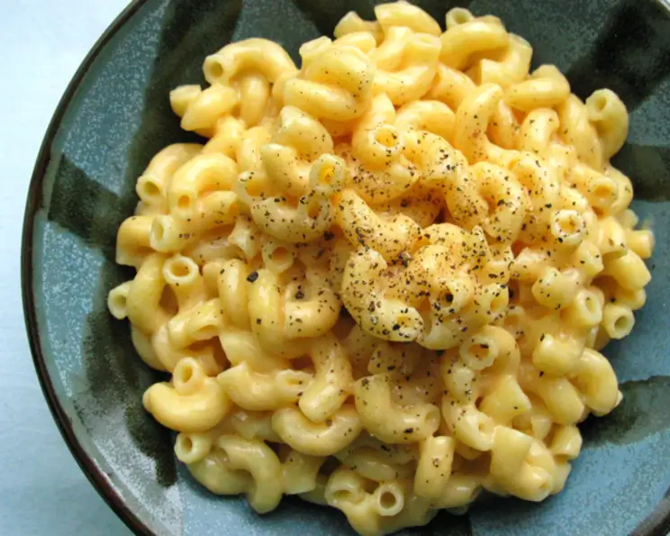

Mac and Cheese

Simple but delicious Mac and Cheese
This is a very basic macaroni and cheese that is good on it's own, or can be used as the base to many different spins.
Ingredients
- 1lb elbow macaroni
- 2 tablespoons butter
- 2 tablespoons flour
- 2 cups milk, warmed
- 1-2lb sharp cheddar cheese
Steps
- Boil and drain macaroni per box instructions.
- Melt the butter in a skillet.
- Sprinkle in flour and stir until pasty.
- Whisk in warmed milk and let cook until thickened.
- Add cheese to sauce.
- Add sauce to pasta.